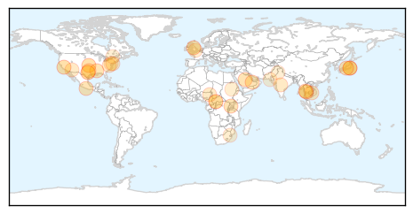

30 Day Trends
Web: 0 alerts, 0 warnings
Twitter: 4 alerts, 0 warnings
Top Articles:
- 0.993
- County's second case of enterovirus 'under investigation'
- 0.961
- B.C. man first known death linked to enterovirus D68 in Canada
- 0.954
- Asthmatic First to Die from Enterovirus in Canada — Naharnet
- 0.917
- Chicago Tribune
- 0.917
- Chicago Tribune
- 0.917
- Chicago Tribune
- 0.910
- The world windows to Thailand
- 0.910
- The world windows to Thailand
- 0.879
- Mississippi reports 1st flu case of season
- 0.866
- Woman being monitored for Ebola falls ill in Dallas -local media
- 0.866
- Man looks at the sea as dark clouds brought by Tropical storm Trudy are seen in Acapulco
- 0.866
- Brief fire on Saudi oil pipeline has no effect on production, exports
- 0.866
- Saudi oil pipeline briefly set alight after shots fired at patrol
- 0.866
- Suspected rebels kill more than 20 people in eastern Congo village
- 0.763
- Norovirus hits several students at Colina Elementary
- 0.729
- Malaria’s New Frontline - Myanmar
- 0.683
- Bribery, Corruption Infecting Health
- 0.681
- Central African Republic: UN officials deplore militia's targeting of hospitals, patients
- 0.681
- Central African Republic: UN officials deplore militia's targeting of hospitals, patients
- 0.669
- Pork producers enjoy high profits while continuing to battle viral epidemic
- 0.666
- Attendance drop continues after student death
- 0.659
- Cool heads, not fevered pitches
- 0.654
- Whole exome sequencing closer to becoming 'new family history'
- 0.653
- Central African Republic: UN officials deplore militia's targeting of hospitals, patients
- 0.593
- Mountain residents warned about Tsutsugamushi disease
- 0.579
- New viruses ‘killing amphibians’
- 0.568
- New, free nurse health line helps you get medical answers when you need them
- 0.561
- Lyme Disease Talk at WPL
- 0.560
- Sudan Vision Daily
- 0.559
- Observer
- 0.532
- Water shortage at Services Hospital
- 0.509
- KWSB ‘apathetic’ to Services Hospital’s water woes
- 0.508
- Rare respiratory virus EV-D68 linked to first death in Canada
Top Tweets:
-
No tweets found for Oct 18, 2014
Web/News Articles

Tweets

Article Locations
Article Confidences